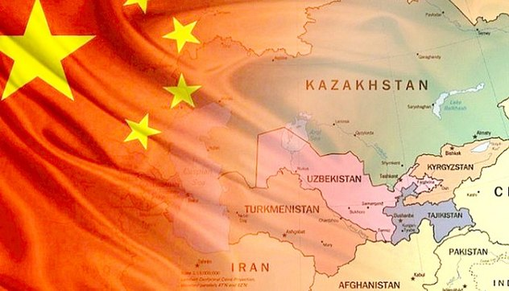
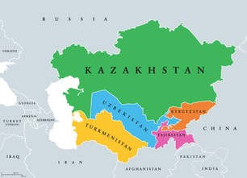
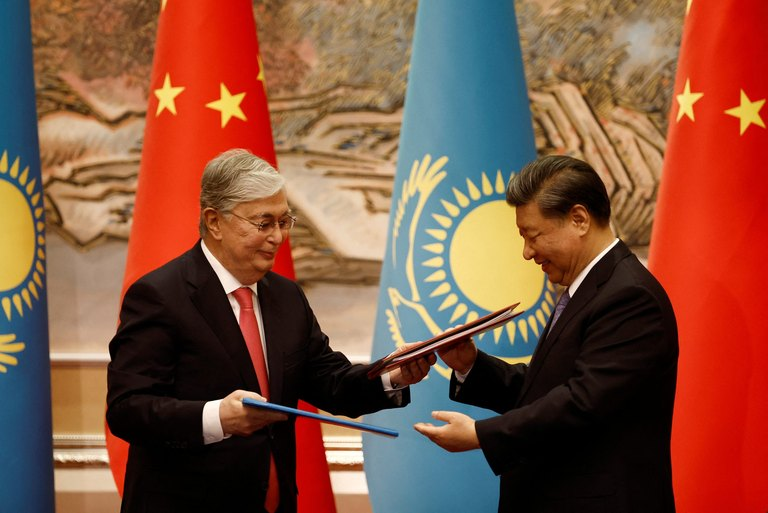

Introduction
China’s trade with the five Central Asian states grew 150-fold in three decades, from US$460 million to more than US$70 billion in 2022 (Wolff 2023). By 2025, bilateral trade had reached a record US$106.3 billion (Birbayeva 2026). This is more than a story of growing trade. China is becoming increasingly important to Central Asia’s infrastructure, transport and economic connectivity, making the quality of these economic relationships more important than their size alone. At the same time, Central Asian governments are not simply passive recipients of Chinese investment.

In his 2023 The Conversation article, Stefan Wolff examines the first China–Central Asia Summit in Xi’an, where 54 agreements and cooperation initiatives were reached alongside new mechanisms for regional cooperation (Wolff 2023). Yet the growth of Chinese engagement raises a broader question: does greater connectivity give Central Asian states more choices, or does it make them more dependent on one major partner?
This blog argues that Chinese engagement creates both opportunity and exposure. Using Kazakhstan as the main case, it examines how Central Asian states can hedge by maintaining alternative partners, transport routes and sources of investment. The issue is therefore not whether China is good or bad for Central Asia, but whether engagement with China expands or narrows the region’s strategic options.
China creates connectivity but what kind?
China’s growing economic presence has brought clear opportunities for Central Asia. BRI-related infrastructure can help overcome geographical constraints and strengthen trade, investment and transport links with external markets (Wang et al. 2025). For landlocked economies such as Kazakhstan, improved connectivity can therefore support market access and participation in wider supply chains.
But connectivity does not produce the same outcome in every form.

In a study covering Central, South and Southeast Asia, Liu et al. (2024) find that Chinese FDI is positively associated with intra-regional economic integration, while stronger trade ties with China have a negative relationship with intra-regional integration. Their findings suggest that investment and trade can affect regional integration differently.
Chinese investment may strengthen connectivity, while concentrated trade relationships can make broader regional integration more difficult. The issue, then, is not simply how much China invests, but whether Chinese engagement leaves Central Asian states with meaningful alternatives.
For Central Asian states, the question is therefore not simply how much Chinese investment they receive. It is how that investment fits within a wider network of economic relationships.
The Middle Corridor: An alternative route, not a new relationship
Kazakhstan provides a useful test of this problem. Its geographic position makes it a major transit link between China and Europe. Following Russia’s invasion of Ukraine, the Middle Corridor, or Trans-Caspian International Transport Route (TITR), gained renewed attention as an alternative to the Northern Corridor through Russia (OECD 2023).

The corridor is growing rapidly. In 2024, traffic through the TITR reached 4.5 million tonnes, up 62%, while container traffic increased 170% to 56,500 TEU. Of this, 35,600 TEU moved in the China–Europe direction, 27 times the previous year (Interfax 2025).
These figures show genuine progress. However, the corridor still faces significant structural constraints. OECD (2023) estimates that its current capacity is at most 5% of the Northern Route, while multiple border crossings, modal changes, infrastructure bottlenecks and weak regional coordination continue to limit its competitiveness.
The Middle Corridor can reduce Kazakhstan’s reliance on transit through Russia without necessarily reducing its exposure to China-linked trade. In fact, much of the corridor’s recent growth is driven by China–Europe flows.
The same problem appears in Kazakhstan’s export structure. OECD (2024) reports that exports from non-resource sectors were below 10% in 2020, unchanged from 2013. Kazakhstan has diversified its trade, transit and transport partners, but its export economy remains heavily dependent on primary commodities. So alternatives matter — but having an alternative is not the same as having enough alternatives.
| Actor | Opportunity | Exposure |
|---|---|---|
| Global logistics firms | A China–Europe land option that avoids Russia | Low capacity, repeated transshipment, Caspian delays |
| Kazakhstan | Transit revenue, FDI, infrastructure | Commodity dependence; exposure to China-centred trade flows |
| Kyrgyzstan & Uzbekistan | Greater access to Chinese markets and new transport infrastructure | Financing exposure; local opposition to some projects |
| EU | Alternative supply route; critical raw materials | Competition with established China-linked networks |

The pattern is therefore not simply positive or negative. The same connectivity that creates opportunity can also create exposure.
For Central Asian governments, this makes the question of how to diversify more important than the question of whether to engage with China.
Hedging: keeping the options open
If Chinese engagement creates both opportunities and exposure, hedging offers a middle path. Rather than reducing engagement with China, governments can use three forms of diversification to preserve room for manoeuvre: partners, routes and funding.
1.Diversify infrastructure funding
The EU and international financial partners committed to mobilise €10 billion for sustainable transport connectivity in Central Asia at the January 2024 Investors Forum (European Commission 2024). This creates an additional source of funding for the Trans-Caspian Transport Corridor rather than relying on a single external partner.
However, diversification does not mean that alternative funding is automatically cheaper, faster or easier to access. Different investors bring different financial, governance and project requirements. The benefit is therefore greater bargaining space, not necessarily lower costs.
2.Make alternative routes actually competitive
The Middle Corridor demonstrates that building another route is only the first step. OECD (2023) identifies infrastructure, customs procedures, digitalisation and cross-border coordination as key constraints.
Improving these areas could make the corridor more reliable and competitive. Yet this requires sustained coordination between several countries and transport systems. An alternative route only creates strategic value if firms can realistically use it.
3.Build domestic legitimacy around foreign investment
Economic diversification also needs public support. Greater transparency, local employment and stronger environmental assessment could help governments respond to concerns surrounding Chinese projects (Jardine et al. 2025).
But stronger requirements can also increase project costs or slow approval. This is another trade-off: greater scrutiny may improve legitimacy, but excessive regulation can reduce investment speed and attractiveness.
The objective, therefore, is not to exclude China. It is to ensure that Chinese engagement remains one option within a wider portfolio of economic relationships.
Conclusion
China’s growing role in Central Asia is neither simply an opportunity nor simply a source of dependence. Chinese engagement can provide infrastructure, market access and connectivity, while concentrated relationships can also increase economic and political exposure.
Kazakhstan shows why diversification is more complicated than simply finding another route or another investor. The Middle Corridor reduces reliance on Russia, but its growth is closely connected to China–Europe trade. Kazakhstan has expanded its external partnerships, yet its export structure remains heavily concentrated in primary commodities.
This is where hedging matters. Rather than choosing between China and its alternatives, Central Asian states can seek to keep several options available — across funding sources, trade partners and transport routes. These alternatives will not remove dependence entirely, and each comes with its own costs and constraints. But they can strengthen governments’ bargaining power and preserve room for policy choice. The strategic question, then, is not whether Central Asia should engage with China. It is whether Central Asian states have enough alternatives to remain able to choose how they engage.
References
- Birbayeva, A 2026, ‘China–Central Asia trade hits record $106 billion in 2025’, The Astana Times, viewed 22 September 2026, https://astanatimes.com/2026/01/china-central-asia-trade-hits-record-106-billion-in-2025/.
- Caspian Policy Center n.d., Middle Corridor Live Map, Caspian Policy Center, viewed 22 September 2026, https://www.caspianpolicy.org/research/maps/middle-corridor-live-map.
- European Commission 2024, Global Gateway: EU and Central Asian countries agree on building blocks to develop the Trans-Caspian Transport Corridor, Directorate-General for International Partnerships, viewed 22 September 2026, https://international-partnerships.ec.europa.eu/news-and-events/news/global-gateway-eu-and-central-asian-countries-agree-building-blocks-develop-trans-caspian-transport-2024-01-30_en.
- Interfax 2025, ‘Traffic via Trans-Caspian International Transport Route up 62% to 4.5 mln tonnes in 2024’, Interfax, viewed 22 September 2026, https://interfax.com/newsroom/top-stories/110366/.
- Jardine, B, Karibayeva, A and Lemon, E 2025, ‘Bumps along the Belt and Road: unpacking Sinophobic sentiments in Central Asia (2002–2023)’, Europe-Asia Studies, vol. 77, no. 4, pp. 617–637, https://doi.org/10.1080/09668136.2025.2486300.
- Lim, G, Tjia, LY and Murashkin, N 2025, ‘Opportunities and challenges of China’s economic ties with Kazakhstan: looking back to look forward’, The Chinese Economy, vol. 58, no. 1, pp. 127–140, https://doi.org/10.1080/10971475.2024.2373643.
- Liu, H, Xu, C and Lim, G 2024, ‘The China effect on regional economic integration: a longitudinal study of Central, South and Southeast Asia’, Journal of the Asia Pacific Economy, vol. 29, no. 4, pp. 2110–2132, https://doi.org/10.1080/13547860.2023.2258018.
- OECD 2023, Realising the potential of the Middle Corridor, OECD Publishing, Paris, viewed 22 September 2026, https://www.oecd.org/en/publications/realising-the-potential-of-the-middle-corridor_635ad854-en.html.
- OECD 2024, Diversifying Kazakhstan’s exports: institutions, policies, infrastructures, OECD Publishing, Paris, viewed 22 September 2026, https://www.oecd.org/en/publications/diversifying-kazakhstan-s-exports_7f9cd8aa-en.html.
- Sim, L-C and Aminjonov, F 2024, ‘Statecraft in the steppes: Central Asia’s relations with China’, Journal of Contemporary China, vol. 33, no. 148, pp. 618–633, https://doi.org/10.1080/10670564.2022.2136937.
- Wang, J, David, LK and Cisse, II 2025, ‘China’s economic strategy in post-communist nations: trade, FDI, and infrastructure investments under the Belt and Road Initiative’, Post-Communist Economies, vol. 37, no. 7, pp. 933–973, https://doi.org/10.1080/14631377.2025.2517981.
- Wolff, S 2023, ‘How China is increasing its influence in Central Asia as part of global plans to offer an alternative to the West’, The Conversation, viewed 22 September 2026, https://theconversation.com/how-china-is-increasing-its-influence-in-central-asia-as-part-of-global-plans-to-offer-an-alternative-to-the-west-206035.